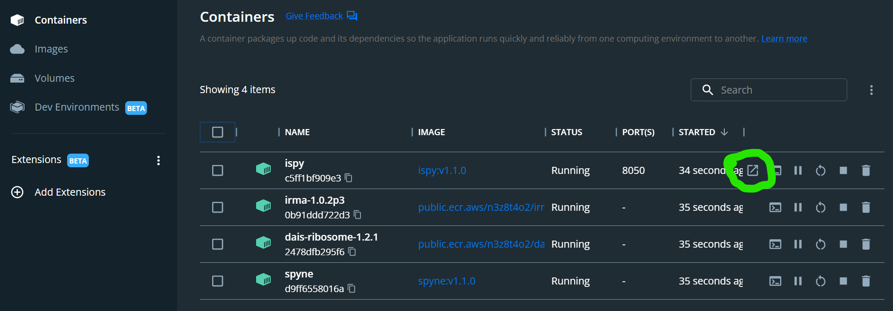

vignettes/setting-up-containers.Rmd
setting-up-containers.RmdMIRA relies on four Docker containers to
run, each of which must be installed using the docker pull
command inside Linux or Mac Terminal to download the docker
images from the Quay.io repository (IRMA and
DAIS-Ribosome are presently stored in AWS’s ECR). These
images are then built into runnable
containers with the docker run
command.
If using a Windows PC, you should have already installed WSL2, Docker Desktop, and Docker CLI inside WSL2. If you have not, please return to those instructions.
Open an Ubuntu or Mac Terminal
Pull the container for our genome assembler: IRMA
docker pull public.ecr.aws/n3z8t4o2/irma:1.0.2p3Pull the container for our genome annotator: DAIS-Ribosome
docker pull public.ecr.aws/n3z8t4o2/dais-ribosome:1.2.1Pull the container for MIRA’s backend “spyne” Snakemake workflow manager
docker pull quay.io/nbx0_cdc/spyne:v1.1.1Pull the container for MIRA
docker pull quay.io/nbx0_cdc/mira:v1.1.0Create a folder inside Ubuntu that will store your sequencing runs’ data.
mkdir ~/FLU_SC2_SEQUENCINGFile Explorer and find this folder inside the Ubuntu mount
on the left sidebar. Click on this folder to open its contents and then
open home and then open the folder named for your WSL
username. Right click “FLU_SC2_SEQUENCING” and
Create Shortcut. Move the shortcut folder to a memorable
location such as your Desktop. Build the IRMA container
docker run -v $(readlink -f ~/FLU_SC2_SEQUENCING):/data --name irma-1.0.2p3 -t -d public.ecr.aws/n3z8t4o2/irma:1.0.2p3Build the DAIS-Ribosome container
docker run -v $(readlink -f ~/FLU_SC2_SEQUENCING):/data --name dais-ribosome-1.2.1 -t -d public.ecr.aws/n3z8t4o2/dais-ribosome:1.2.1Build the spyne container
docker run -v $(readlink -f ~/FLU_SC2_SEQUENCING):/data -v /var/run/docker.sock:/var/run/docker.sock --name spyne -t -d quay.io/nbx0_cdc/spyne:v1.1.1Build the MIRA container
docker run -v $(readlink -f ~/FLU_SC2_SEQUENCING):/data -v /var/run/docker.sock:/var/run/docker.sock -d -p 8050:8050 --name mira quay.io/nbx0_cdc/mira:v1.1.0Optional : Download test data here
Refresh Run Listing in MIRA, you should now
see these folders listed27,37,41 and make up sample names.2,3,5,8,28 and make up sample names.You are now ready to run MIRA! You can open it from
Docker Desktop by clicking on the Containers
tab on the left sidebar and clicking the icon of the box with the arrow
pointing to the top left. This will open MIRA into your default internet
browser.
